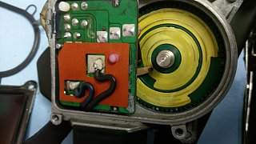
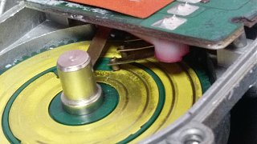
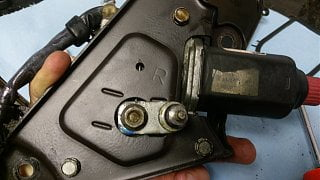
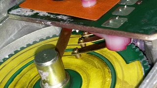
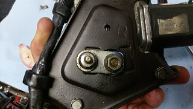
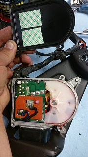
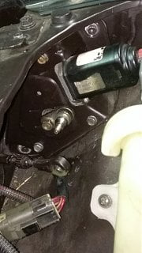
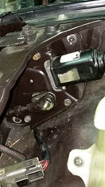

-
Have lagging or inconsistent headlight motors? Fuses, harness, relays and timers all good? Possibly getting a bad motor continuity reading while testing per FSM EL-52?
Try this first! it solved my lagging inconsistent headlight motors after confirming all electrical operations and signals were good.
First remove the black cover that the relay is mounted on, and clean the grease out from your headlight motor assembly.
Image 1: These are the guts of your headlight motor. The logic board has contact fingers that scroll along a dial. This dial has 'dead points'
Image 2: This is at full DOWN, note the inner most contact is on top of a non-conductive surface, opening the circuit.
Image 3: we can confirm full DOWN by the alignment marks on the headlight motor frame.
Image 4: If you rotate the manual knob you will see the outter most contact reaches a non-conductive surface. this is full UP
Image 5: Again we confirm this by aligning the pivot arm within the marks.
CONT.    Last edited by 88sinZ; 06-23-2016, 10:14 PM. -
Now, after cleaning the grease and gunk from the internals, use clean grease and apply sparingly focusing on the outside gear. To ensure proper contact i'd suggest adding a strip(s) of double sided tape, see image 1
Image 1: Double sided tape to ensure good contact points-to-rotary dial. Leave the plastic on so the tape doesn't stick to the logic board.
Image 2: Reinstall motor after assembly, leave pivot arm loose, attach connector with negative battery terminal removed. Reattach negative battery terminal and cycle motor multiple times - ensure proper operation
image 3: Once the motor has been cycled, the rotor will self align. Check that your pivot arm is still aligned. Remove negative battery terminal and adjust pivot arm as needed. Tighten pivot arm and attach headlight lever arm, do not worry about deflection while tightening, the motor has self aligned and will return to the down position. Reattach negative battery terminal. Operate to check full cycle.  Last edited by 88sinZ; 06-24-2016, 01:00 AM. -
Awesome write-up. Thanks for doing this.

Copyright © 2006–. All rights reserved. Privacy Policy